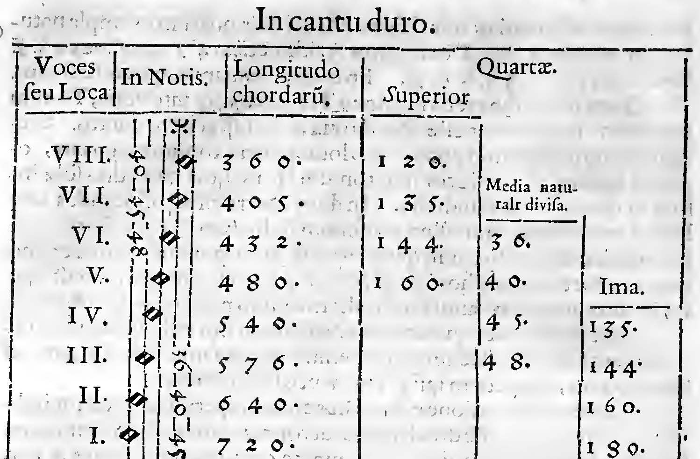

Chapter VII: Proportions of the Eight Diatonic Notes of an Octave¶
Chapter VII.
On the complete division of one octave in both genera of song, and on the natural order of all melodic intervals.
Thus far, then, Nature herself has shown that in soft song (cantus mollis) the third melodic interval from the bottom is the minor tone 9:10, the fourth is the major tone 8:9, and the fifth is the semitone 15:16; whereas in hard song (cantus durus) the third from the bottom is 15:16, the fourth 8:9, and the fifth 9:10.
There remain in both genera of song two pairs of thirds, one minor and one major in each, which have not yet been divided actually, by natural divisions of the string, into the least melodic elements.
First let us see into what melodic intervals they can be divided, and then in what order each is to be placed.
Now Nature teaches plainly enough that, if we can divide them into the same elements out of which we have seen the fourth (diatessaron)
f. 0135 · p. 45consonances to be composed, we ought not to use others of which Nature shows no examples. Arithmetic therefore teaches that 4:5 consists of 8:9 and 9:10, and likewise 5:6 of 8:9 and 15:16. Behold the very same melodic intervals as before.
Now unless you place the major tone at the bottom of each lower third, there cannot be a single common string in both genera of song. For if in soft song you cannot place the major tone at the bottom, you must put the semitone 15:16 there, since these two alone lie within the undivided interval 5:6. In hard song, on the contrary, the minor tone would have to be placed at the bottom, because that undivided consonance, namely the major third, does not contain the semitone which beforehand in soft song would have had to be placed at the bottom; thus two strings would arise, of which the longer would form a semitone with the longest string for soft song, and the other a major tone for hard song.
In the second place, there is this: that it seems agreeable to nature that, wherever we have a free choice of division, the larger intervals should incline toward the low sounds, because even the low sounds themselves are smaller than the high ones; by the same first reason we shall also prove that the upper third, hitherto undivided, must be so divided that the major tone stands in the highest place, lest the seventh string become doubled. For in soft song the upper interval is 4:5, and in hard song 5:6, by the natural method set forth above. If, therefore, we were to set the complete tone (that is, the other element of the third) in the lower place of this upper third, then the same interval, rising from voices of different pitch, would also reach voices of different pitch, making two out of one. These demonstrative and altogether necessary reasons suffice against the authorities of Ptolemy, Zarlino, and Galilei, who place the minor tone at the lowest position of the octave.
Therefore the eight strings are set forth by these numbers, reduced to the same least common denominator.
System of the Octave — In soft song.
Voices or Places |
String Length |
Upper Fourth |
Middle (nat. div.) |
Low Fourth |
|---|---|---|---|---|
72 (or 360) |
24 |
|||
81 (or 405) |
27 |
|||
90 (or 450) |
30 |
30 (or 15) |
||
96 (or 480) |
32 |
32 (or 16) |
||
108 (or 540) |
36 (or 18) |
27 |
||
120 (or 600) |
40 (or 20) |
30 |
||
128 (or 640) |
32 |
|||
144 (or 720) |
36 |
In hard song.


You see expressed in least numbers not only the proportions of all eight lengths, but also of the four highest and the four lowest in smaller numbers; and especially of the three highest and the three lowest, concerning whose middle ones and their numbers a controversy stands between me and the authorities in this chapter. For VII in both genera of song is 405, and II in both is 640.
Remember, however, that only the eight principal strings of each genus are set down in this chapter; concerning the accessory strings, one of which hard song adopts next to the highest place, we shall inquire in the following chapter. For here our aim is to see how the penultimate upper and lower strings are to be established so that they may be the same in both genera.
And because in joining these eight principal strings of both songs two of them are doubled on musical instruments, there arise in the common system ten principal strings of one octave, though no more than eight Places (Loca) are recognized—and are so called. See the origin of the term in Chapter IV.
Marginal note: See also this layout, which comes to the same thing: Places of hard song (VIII–I): 360, 405, 432, 480, 540, 576, 640, 720 [1619 print: 920]; Places of soft song (VIII–I): 360, 405, 450, 480, 540, 600, 640, 720 [1619 print: 920].